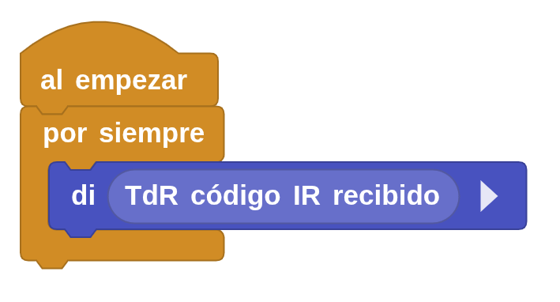
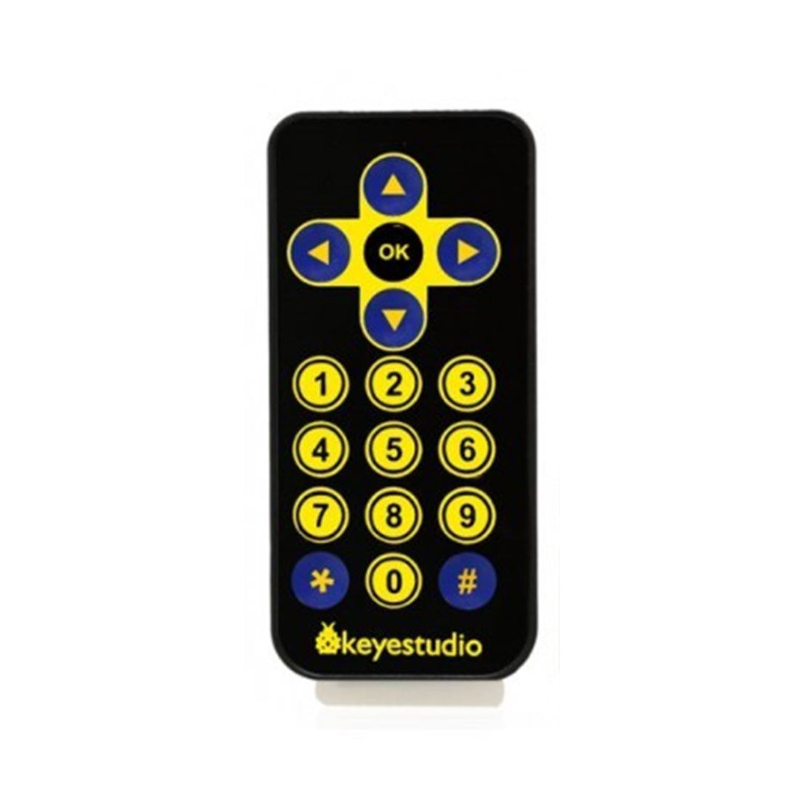
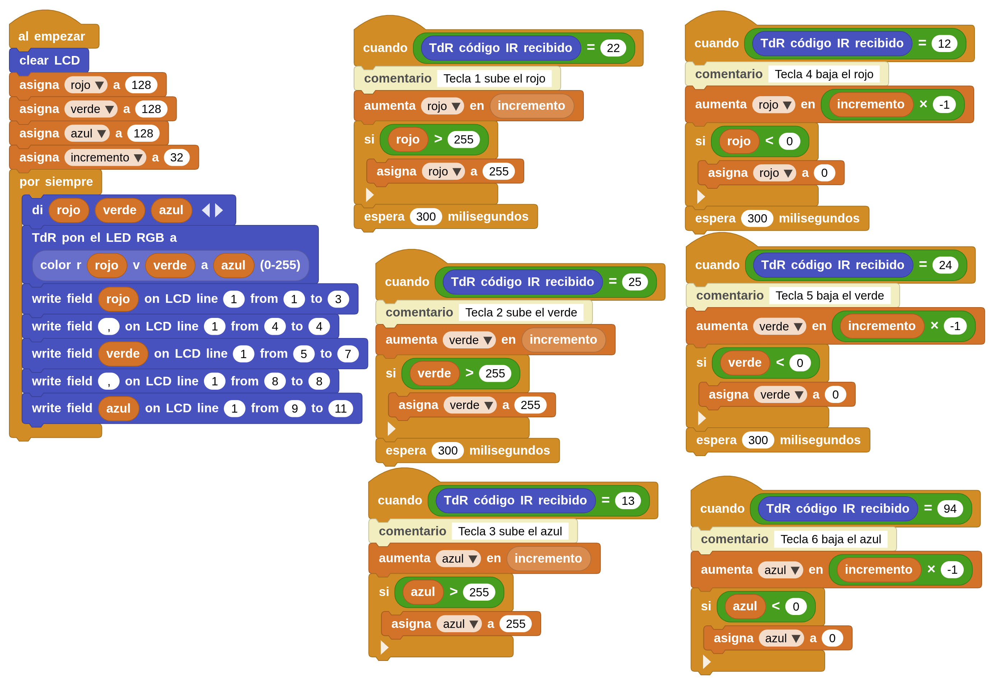

Infrarrojos y TDR-Steam
La placa TDR-Steam tiene un sensor de infrarrojos en el pin digital 11/IO23, que cualquier mando a distancia puede enviarle una señal infrarroja que se codifica en nuestro sistema de control con un código.
| Sensor/Actuador/Módulo | Pin de conexión | |
| 7 | Módulo receptor de infrarrojos (IR) | D11/IO23 |
El Kit de trabajo nos viene con un mando a distancia de Keyestudio, lo que haremos es descifrar el código de cada una de las teclas del mismo, para ello usaremos el siguiente programa:


| Botón | Flecha arriba | Flecha abajo | Flecha derecha | Flecha izquierda |
| Código | 70 | 21 | 67 | 68 |
| Botón | OK | 1 | 2 | 3 |
| Código | 64 | 22 | 25 | 13 |
| Botón | 4 | 5 | 6 | 7 |
| Código | 12 | 24 | 94 | 8 |
| Botón | 8 | 9 | 0 | * |
| Código | 28 | 90 | 82 | 66 |
| Botón | # | |||
| Código | 74 |
Tarea Reto 4 Maletas
Se trata de un compositor de colores RGB en el led RGB de la TDR-STeam, las teclas del mando a distancia actuarán de las siguiente forma:
- Botón 1 aumenta el color rojo, botón 4 disminuye el color rojo.
- Botón 2 aumenta el color verde, botón 5 disminuye el color verde.
- Botón 3 aumenta el color azul, botón 6 disminuye el color azul.
Los colores no pueden bajar de valor 0 ni subir por encima de 255. La cantidad de los tres colores debe aparecer en el programa con el bloque "di" y en la pantalla LCD. Al principio los tres colores están a valor 128.
Código:
